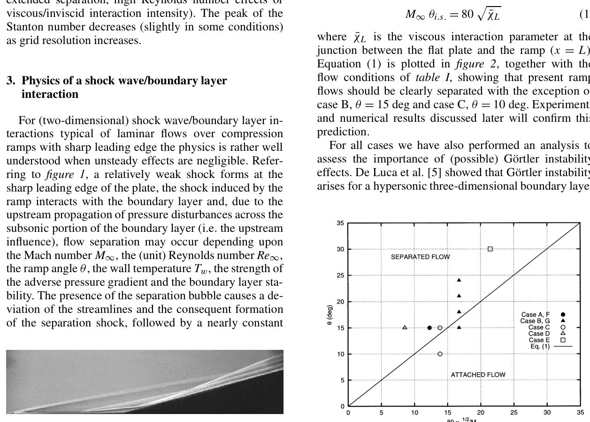
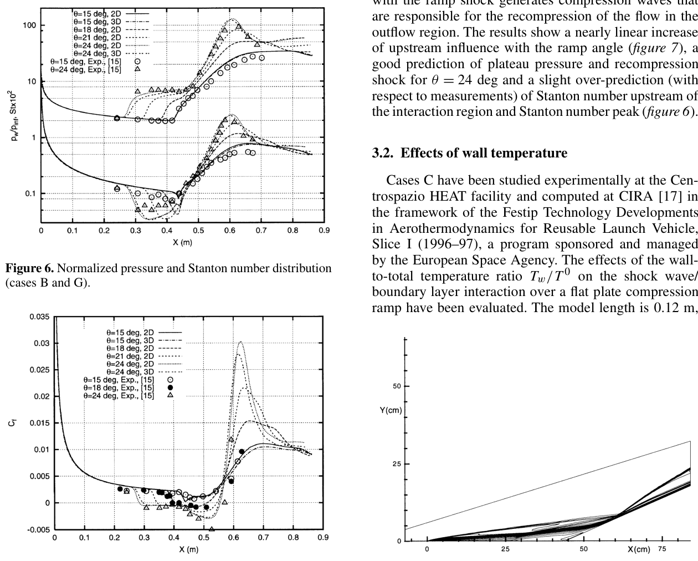
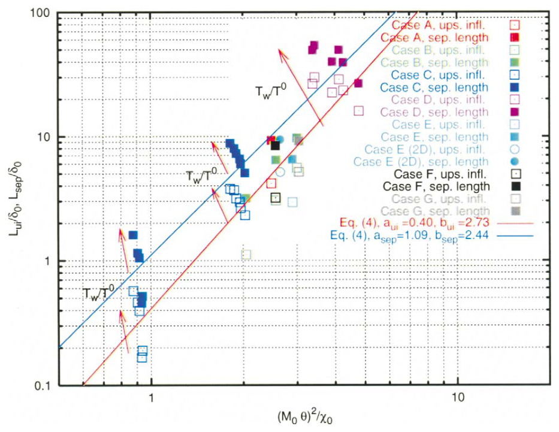
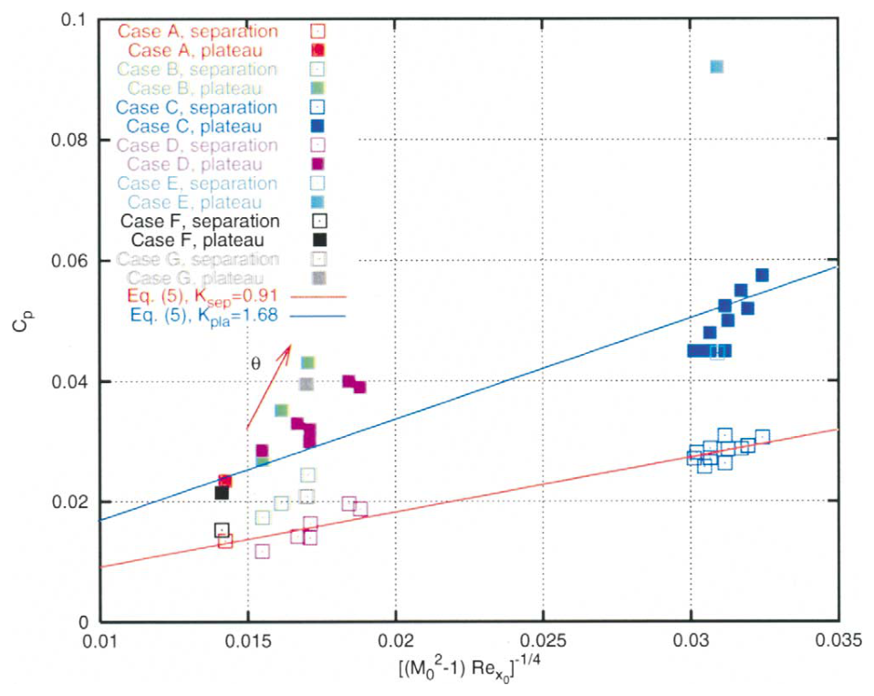

01中文摘要
回顾尖前缘压缩拐角（二维与轴对称凹面）上的层流激波/边界层干扰，并通过大量数值模拟与实验对比，深化对流动特征与控制机理的认识。辨识数值模拟的关键环节，重点分析斜坡角、壁温、轴对称性和有限展长的影响。算例覆盖较宽马赫数与雷诺数范围，并以简化理论、实验测量和关联律校验。结果表明机械/热载荷与分离特性强烈依赖斜坡角、壁温假设和几何构型，其定量预测还取决于网格分辨率及物理/数值模型。
02阅读说明
文章类型：数值模拟为主，辅以实验对比、简化理论分析与相关律拟合（综述性计算研究）。材料范围：Aerosp. Sci. Technol. 5 (2001) 257–271 全文15页，bundle 文本完整无截断；图件清单15张，图表可读。已回原 PDF 核对式(1)(2)(3)(4)(5)(6)（PDF 第4、9、11、13页，对应印刷页260、265、267、269），符号清晰。信息完整度较高；主要缺口：Fig.15（Lui/L–Tw/T0）与 Fig.24（峰值热流相关）未列入图件清单，部分实验不确定度未给出。提取口径：仅用 bundle 文本/图注与上述 PDF 页核对，不引外部知识。 文章类型：期刊
03一句话核心与三句话摘要
对7个尖前缘压缩拐角层流工况做全NS计算，量化转角、壁温、轴对称与有限展长对分离和热载的影响并建立相关律。
- 层流激波/边界层干扰的机械与热载荷预测依赖转角、壁温、轴对称性和有限展长，但缺少跨 Mach 6–14.1、Re 1.86×10^5–4.2×10^6 的统一数值评估。 AI概括
- 用 MG2DTVD 与 H2NS 求解理想气体全 Navier–Stokes 方程，对 CUBRC、Centrospazio、RWTH、ONERA 的 A–G 七个工况（二维、轴对称与三维有限展长）计算，并与实验、Görtler 稳定性判据及相关律对比。 AI概括
- 转角增大使平台/峰值压力与峰值热流升高、上游影响近线性增长；壁温升高使分离扩大而热流下降；轴对称与有限展长显著改变分离尺度；式(1)–(6)可较好关联，但相关参数需补充 Tw/T0 与转角效应。 AI概括
04核心内容清单
| 要点 | 类型 | 重要性 | 原文依据 | 属性 |
|---|---|---|---|---|
| 七个工况覆盖 M∞=6–14.1、Re∞/m=1.86×10^5–4.2×10^6，包含二维、轴对称与三维有限展长构型。 | 研究设计 | A | Table I，p.259；§1，p.259 | 原文明确 |
| 用 M∞θi.s.=80√χ̄L 预判分离：A、B(θ≥18°)、D、E 分离；B(θ=15°)、C(θ=10°) 不分离，随后被实验与计算证实。 | 判据/验证 | A | 式(1)，p.260；Fig.2，p.260 | 原文明确 |
| 转角效应：θ 由 15° 增至 24° 使平台与峰值压力、峰值热流升高，上游影响近似线性增长；θ=24° 还出现膨胀波-斜坡激波干涉。 | 参数影响 | A | §3.1，p.262；Fig.6–8，p.262 | 原文明确 |
| 壁温效应：Tw 升高使边界层增厚、更易分离、干扰区扩大，压力峰值略升，热流整体下降；Lui/L 随 Tw/T0 近线性增长。 | 参数影响 | A | §3.2，p.263–264；Fig.15，p.264 | 原文明确 |
| Tw/T0 在低 Re、常壁温条件下不是相似参数：相同 Tw/T0 由不同 (Tw,T0) 组合实现时 Lui/L 不同；高 Re、绝热壁下才近似成立。 | 相似性结论 | A | p.265 | 原文明确 |
| 绝热壁最临界：分离最上游、再附最下游、壁温最高；相对辐射平衡壁，分离处壁温高 78%（条件 I）/121%（条件 II）；Tw=300 K 使上游影响减少约 50%（对绝热壁）和 35%（对辐射平衡壁）。 | 热边界条件影响 | A | p.264–265；Fig.14–15，p.264 | 原文明确 |
| 轴对称效应：圆柱段曲率影响小，干扰区内二维假设给出更大分离、更高平台压力、更低峰值压力与更低 Stanton 数（边界层更厚）。 | 几何效应 | A | §3.3，p.265–266；Fig.17–18，p.265–266 | 原文明确 |
| 有限展长效应：分离区由中心面向侧缘收缩；case F 中心面上游影响减少约 11%，计入三维效应后与实验吻合改善；case G 仅定性一致。 | 三维效应 | A | §3.4，p.266–267；Fig.19–21，p.266–267 | 原文明确 |
| 相关律：式(4) aui=0.40、bui=2.73、asep=1.09、bsep=2.44；式(5) Ksep=0.91、Kpla=1.68；式(6) apk=0.73、bpk=0.8。 | 定标律 | A | §4，p.267–269；式(4)–(6)，Fig.22–24 | 原文明确 |
| Görtler 稳定性筛查：除 case C（θ=10°）与 case D 外，Gδ 均处稳定区，支持其余工况按二维模拟；λ=5 mm、Λ=1800。 | 稳定性校核 | B | p.261；Fig.3，p.261 | 原文明确 |
| 网格敏感性：上游影响对网格最敏感；Stanton 峰值随网格加密略降；case B 仅 θ≤18° 网格合适；三维 case F/G 未达网格无关。 | 数值不确定性 | A | p.260、p.262、p.266–267、p.269 | 原文明确 |
| case A 验证显示平台压力偏低、压力峰值偏高、拐角后膨胀偏弱，但 Stanton 数整体吻合好，说明热流预测比压力细节更稳健。 | 验证结果 | B | p.261；Fig.4，p.261 | 原文明确 |
05引言：研究问题与领域缺口
【AI概括】可重复使用运载器（RLV）的升降副翼、翼/体襟翼等控制面处于激波/边界层干扰区，干扰可导致扩展分离、层流-湍流转换和局部强加热，并增大阻力、改变铰链力矩、降低控制面气动效率（p.258）。【原文明确】Holden 的实验表明上游影响随转角增大、随 Mach 数减小，并受 Reynolds 数影响（全湍流时较弱）；Délery 指出层流与湍流干扰结构相似，差别在特征尺度与载荷强度，且 Hung–Barnett 峰值热流相关律从层流到全湍流均适用（p.258–259）。【原文明确】De Luca 等发现再附下游可因流线曲率出现 Görtler 涡，壁面热流呈 O(20–30%) 的展向周期变化，波长随 Re 近似反比、对 Mach 数弱依赖（p.259）。【原文明确】Grasso 等评述了不同区域内摩阻/Stanton 数、特征压力与峰值热流的相关式，并考虑黏性干扰对 Eckert 参考焓结果的修正（p.259）。【AI概括】缺口：缺少在统一数值框架下同时考察转角、壁温、轴对称与有限展长，并用简化理论、实验与相关律交叉验证的系统分析。目标：以 A–G 七个典型工况量化上述四类效应，并检验式(1)–(6)的适用范围（p.259）。
06流动条件与几何构型
| 项目 | 数值/描述 | 依据 | 备注 |
|---|---|---|---|
| 工况A（CUBRC，二维） | T0=1880 K；M∞=11.63；Re∞/m=552116 m⁻¹；θ=15°；T∞=67.05 K；Tw=294.38 K；平板长 L=0.4394 m；χ̄L≈3.2；θi.s.=12° | Table I，p.259；§3，p.261 | 与实验[14]对比；计算五级网格 |
| 工况B（CUBRC，二维） | T0=3623 K；M∞=14.10；Re∞/m=236200 m⁻¹；θ=15°、18°、21°、24°；T∞=88.88 K；Tw=297.22 K；平板 0.4389 m + 等长斜坡；χ̄L≈8.7；θi.s.=16.24° | Table I，p.259；§3.1，p.262 | 仅 θ=15° 网格无关 |
| 工况C（Centrospazio，二维） | T0=1080 K、1800 K；M∞=6.0；Re∞/m=8×10^5 m⁻¹；θ=10°、15°；模型总长 0.12 m，平板长 0.05 m；Tw=300 K、400 K、500 K；Tw/T0=0.1–0.5；Re∞,L=40000 | Table I，p.259；§3.2，p.262–263 | 120×60 网格；实验压力不确定度 5–7% |
| 工况D（RWTH，二维） | 条件I：p0=70 bar，T0=1500 K，M∞=7.7，Re∞/m=4.2×10^6 m⁻¹；条件II：p0=175 bar，T0=2500 K，M∞=7.4，Re∞/m=4.0×10^6 m⁻¹；θ=15°；总长 0.2623 m，平板 0.105 m；Tw=300 K、700 K、绝热、辐射平衡（ε=0.85）；θi.s.=8.5°；Re∞,L≈4×10^5 | Table I，p.259；§3.2，p.263–264 | 条件II 只算绝热与辐射平衡壁 |
| 工况E（ONERA，轴对称） | T0=1050 K；M∞=9.91；Re∞/m=1.86×10^5 m⁻¹；θ=30°；空心圆柱外径 0.065 m，拐点距前缘 0.1017 m，斜坡后圆柱直径 0.115 m、长 0.025 m；T∞=51 K；Tw=293 K；χ̄L≈7；θi.s.≈21° | Table I，p.259；§3.3，p.265 | First Europe-US Database Workshop Part II 验证算例 |
| 工况F（CUBRC，三维） | T0=1880 K；M∞=11.63；Re∞/m=552116 m⁻¹；θ=15°；半展长 Lz=0.3048 m；其余几何/来流同工况A | Table I，p.259；§3.4，p.266 | 176×72×28 网格，中心面对称 |
| 工况G（CUBRC，三维） | T0=3623 K；M∞=14.10；Re∞/m=236200 m⁻¹；θ=15°、24°；半展长 Lz=0.3048 m；其余几何/来流同工况B | Table I，p.259；§3.4，p.266 | 164×64×28 网格；未网格无关 |
07核心现象与关键参数
| 参数 | 定义 | 数值 | 关系/说明 | 依据 |
|---|---|---|---|---|
| 黏性干扰参数 χ̄L | χ̄=M∞³/√(Re∞L)·√C*，C*=ρwμw/(ρ∞μ∞)，取平板/斜坡交界 x=L 处 | 工况A≈3.2；B≈8.7；D对应Re∞,L≈4×10^5；E≈7；C对应Re∞,L=40000（χ̄值文中未给） | 进入式(1)(2)(4)(5) | Nomenclature，p.258；p.261–267 |
| 起始分离角 θi.s. | 由 M∞θi.s.=80√χ̄L 给出 | A：12°；B：16.24°；D：8.5°；E：≈21° | θ>θi.s. 判为分离 | 式(1)，p.260；p.261、262、264、265 |
| 归一化上游影响 Lui/L | 平板/斜坡交界到压力扰动被边界层感知位置的距离除以参考长度 | 随 Tw/T0 近线性增长；case F 比 case A 减少约 11%；case D 中 Tw=300 K 比绝热壁减少约 50%、比辐射平衡壁减少约 35% | 式(3)(4)的核心量 | p.264–267；Fig.21 |
| 分离/平台压力系数 | Cp,sep/pla=Ksep/pla[(M0²−1)Re∞x0]^(−1/4) | Ksep=0.91；Kpla=1.68 | 式(5) | p.269；Fig.23，p.268 |
| 上游影响/分离长度相关指数 | Lui,sep/δ0=F(S)，S=(M0θ)²/χ̄0，F(S)=aSb | aui=0.40，bui=2.73；asep=1.09，bsep=2.44 | 式(4) | p.267–268；Fig.22，p.268 |
| 峰值热流相关指数 | Stpk/Stref=apk(ppk/pref)^bpk，参考值取 x0 处 | apk=0.73；bpk=0.8（对比：Hung–Barnett 0.13/1.13，Holden 1/0.7） | 式(6) | p.269；Fig.24，p.269 |
| Görtler 数 Gδ 与阈值 | Gδ=Re∞,δ(δ/R)^(1/2)；Gℓ.i.=Λ/(2πβ)^(3/2)，β=2πδ/λ | Λ=1800；λ=5 mm；除 case C(θ=10°)与 case D 外均 Gδ<Gℓ.i. | 判断是否需三维 Görtler 模拟 | p.261；Fig.3，p.261 |
| 绝热壁恢复温度比 Taw/T0 | 绝热壁温与总温之比 | 计算平均值≈0.86（条件 I、II 均如此） | 与恢复因子定义给出的理论值一致 | p.264 |
08方法与数据
【原文明确】求解理想气体假设下的全 Navier–Stokes 方程，作者强调必须解析边界层亚声速部分才能正确预测压力扰动的上游传播；流动保持层流，局部温度未高到需考虑真实气体效应（p.260）。【原文明确】使用两套数值方法：MG2DTVD（TVD 多重网格）与 H2NS，进行 code-to-code 对比（p.261）。【原文明确】网格：case A 五级 88×24、176×48、176×72、176×96、352×96；case B 164×64（仅 θ≤18° 时网格合适）；case C 120×60（已网格无关）；case D 128×64、192×96、256×128（未完全网格无关）；case E 210×120 与 310×180；case F 176×72×28；case G 164×64×28（p.260–266）。【原文明确】三维工况取中心面对称、只算半展长，展向最远面施加外推边界条件（p.266）。【原文明确】验证手段：与 CUBRC、Centrospazio、RWTH、ONERA 实验对比（Fig.4–7、9、17–19）；上游摩阻与 Eckert 参考焓法对比（Fig.5）；网格敏感性分析；Görtler 线性稳定性筛查（Fig.3）；式(4)–(6)的最小二乘拟合（p.261–269）。【AI推断】仅 case C 给出 5–7% 的实验不确定度（p.263），其余工况未给，定量对比的置信度因此受限。
| 项目 | 内容 | 依据 | 备注 |
|---|---|---|---|
| 控制方程与物性 | 全 Navier–Stokes 方程；理想气体；层流；不考虑真实气体效应与湍流模型 | p.260 | 作者强调需解析边界层亚声速部分以捕捉上游传播 |
| 数值方法 | MG2DTVD（TVD 多重网格）与 H2NS 两套代码，code-to-code 对比 | p.261 | 同网格下两者分离长度差 17% |
| 网格（工况A） | 88×24、176×48、176×72、176×96、352×96 五级 | p.261 | 前缘与拐角局部加密 |
| 网格（工况B） | 164×64，壁面强拉伸，前缘与分离泡内加密 | p.262 | 仅 θ≤18° 网格合适 |
| 网格（工况C） | 120×60，已网格无关 | p.262–263 | |
| 网格（工况D） | 128×64、192×96、256×128 三级 | p.264 | 未完全网格无关 |
| 网格（工况E） | 210×120 与 310×180 | p.265 | 轴对称 |
| 网格（工况F/G） | F：176×72×28；G：164×64×28；中心面对称+展向外推 | p.266 | 因 CPU 限制未做网格敏感性 |
| 验证与确认 | 与四家风洞实验对比；Eckert 参考焓法摩阻对比；网格敏感性；Görtler 稳定性筛查；相关律拟合 | p.261–269 | 实验不确定度仅 case C 给出 5–7% |
09核心推导与公式
以自由干扰理论结合参考温度法与 Chapman–Rubesin 关系，把上游影响写成壁温比与激波强度的标度（式2）；再用展向等熵演化+黏性干扰理论给出有限展长修正（式3）；最后把 Lui、Lsep、分离/平台压力与峰值热流写成相似参数的相关律（式4–6）。
关键假设
- 理想气体、层流、定常，非定常效应可忽略
- 尖前缘、二维或轴对称凹面几何；分离泡尺度远大于边界层厚度
- 自由干扰：上游影响由 x0 处局部 Cf0、δ0 控制，局部特性用参考温度法与 Chapman–Rubesin 关系确定
- 有限展长：边界层外缘沿展向等熵演化，压力分布由黏性干扰理论给出
- Görtler 不稳定性用线性稳定性阈值判断，取 Λ≈1800、λ=5 mm
- 相关律的系数由本文数值/实验数据库拟合，属于经验标度
推导过程
把来流 Mach 数、单位 Reynolds 数与壁面黏性比组合成 χ̄，用于表征边界层内的黏性-无黏干扰强度；平板/斜坡交界处记为 χ̄L。
采用 Needham–Stollery 判据把表 I 工况划分为分离/附着；式(1)与 Fig.2 一起使用，A、B(θ≥18°)、D、E 落在分离区，B(θ=15°)与 C(θ=10°)落在附着区。
在 x0 处用 Cf0、δ0 表征边界层，结合参考温度概念与 Chapman–Rubesin 层流边界层关系，得到 Lui/L 与壁温比、无黏激波强度成正比；p3/p1 决定上游影响的量级，Tw/T0 改变线性关系的斜率，x0 是 Tw 与 T0 的独立函数。
假设边界层外缘沿展向等熵演化、并用黏性干扰理论求当地压力，则展向某 z 处的上游影响可由中心面值乘以一个只含当地 M 与 χ̄ 的因子得到；完美气体下指数 α≈1.89。
以 δ0 为尺度、S=(M0θ)²/χ̄0 为相似参数，把 Lui/δ0 与 Lsep/δ0 拟合成幂函数；本文数据库给出两组系数，case E（轴对称）偏离趋势。
沿用 Chapman 等的形式，把分离/平台压力系数写成 (M0²−1)Re∞x0 的 −1/4 次幂；用原始公式与经典边界层摩阻关系得到系数，θ=18–24° 时数据分散，说明转角效应未被充分纳入。
沿斜坡的强再压缩与边界层变薄使峰值热流与峰值压力相关；以 x0 处值为参考，拟合幂次关系，数值与实验点均落在同一直线附近。
以干扰前边界层厚度 δ 与相切于分离/再附点的圆半径 R 定义 Gδ，与线性稳定性阈值比较；分离长度趋零时 R→0、Gδ→∞，对应起始分离工况，需单独说明。
适用边界：式(1)为引用判据而非本文推导；式(2)是量级关系，未显式含转角与 Re；式(4)在 θ=18–24° 数据分散、case E 因轴对称偏离；式(5)未充分计入转角，仅观察到弱 Tw/T0 修正；式(6)系数由本文数据库拟合，外推到其他构型需谨慎；三维工况无网格无关性，相关律的“成立”只是定性/半定量。
10结果：主要发现与关键证据
【原文明确】case A（M∞=11.63，Re∞/m=552116，θ=15°，χ̄L≈3.2，θi.s.=12°）：计算的平台压力略低于实验、压力峰值略高、拐角后膨胀偏弱；Stanton 数全模型吻合很好，仅峰值热流略高；分离区长度仍依赖网格且大于实测，同网格下 H2NS 的分离长度比 MG2DTVD 大 17%（p.261–262，Fig.4–5）。【原文明确】case B（M∞=14.1，Re∞/m=236200，θ=15/18/21/24°，χ̄L≈8.7，θi.s.=16.24°）：θ=15° 为附着流，St 呈经典 V 形；θ=18/21/24° 出现分离泡、压力平台及再附下游的压力/热流峰值，幅值随转角增大；θ=24° 时分离激波与再附激波相交产生的膨胀波在长斜坡上反射并与斜坡激波干涉，使其减弱弯曲，随后压缩波使外流再压缩；上游影响随转角近似线性增大（p.262，Fig.6–8）。【原文明确】case C（M∞=6，Re∞/m=8×10^5，θ=10/15°，Tw/T0=0.1–0.5）：θ=10° 处于起始分离，θ=15° 已分离；提高 Tw（或降低 T0）使干扰区变大、压力峰值略升、全模型热流下降；斜坡峰值热流随转角增大近一倍（边界层变薄）。【原文明确】case D（M∞=7.7/7.4，Re∞/m=4.2×10^6/4.0×10^6，θ=15°，θi.s.=8.5°）：绝热壁给出最上游分离与最下游再附；Taw/T0≈0.86 与恢复因子理论一致；分离处绝热壁温比辐射平衡壁温高 78%（条件 I）和 121%（条件 II）；Tw=300 K 时上游影响比绝热壁小约 50%、比辐射平衡壁小约 35%（p.263–265，Fig.13–15）。【原文明确】case E（ONERA 空心圆柱-30° 斜坡，M∞=9.91，Re∞/m=1.86×10^5，χ̄L≈7，θi.s.≈21°）：圆柱段横向曲率影响小，进入干扰区后影响剧烈；二维计算相对轴对称给出更大分离、更高平台压力、更低压力峰值与更低 Stanton 数，原因是对应边界层更厚（p.265–266，Fig.17–18）。【原文明确】case F/G（半展长 Lz=0.3048 m）：分离区由中心面向侧缘减小；case F 计入有限展长后中心面上游影响比 case A 减少约 11%，与实验吻合明显改善；case G 只有定性一致，因未达网格无关（p.266–267，Fig.19–21）。
| 发现 | 证据 | 证据类型 | 强度 | 位置 | 属性 |
|---|---|---|---|---|---|
| 转角由 15° 增至 24° 使平台压力、峰值压力与峰值热流升高，上游影响近似线性增大。 | case B 的 pw/p∞、St 与 Cf 分布（Fig.6–7）；上游影响随 θ 的近线性增长（Fig.7）；结论段复述（p.270）。 | 数值+实验对比 | 强 | §3.1，p.262；Fig.6–7，p.262；p.270 | 原文明确 |
| 提高壁温使边界层增厚、更易分离、干扰区扩大，压力峰值略升而热流整体下降；Lui/L 随 Tw/T0 近线性增长。 | case C 的 Cp 分布（Fig.9）、流线（Fig.10）、温度剖面（Fig.11）；case C/D 的 Lui/L–Tw/T0 曲线（Fig.15）。 | 数值参数研究 | 强 | §3.2，p.263–265；Fig.9–11、15 | 原文明确 |
| Tw/T0 不是层流分离流的相似参数（低 Re、常壁温时）：同一 Tw/T0 由不同 (Tw,T0) 组合实现会给出不同的 Lui/L；高 Re、绝热壁时才近似成立。 | case C（Re∞,L=40000）不同 (Tw,T0) 组合的 Lui/L 分歧；case D（Re∞,L≈4×10^5）绝热壁下两组条件给出同一 Lui/L。 | 相似性分析 | 强 | p.265；Fig.15，p.264 | 原文明确 |
| 绝热壁是最临界的热边界条件：分离最上游、再附最下游、壁温最高；风洞常用的 Tw=300 K 会显著低估分离尺度。 | Taw/T0≈0.86；分离处绝热壁温比辐射平衡壁温高 78%（条件 I）/121%（条件 II）；Tw=300 K 时上游影响比绝热壁少约 50%、比辐射平衡壁少约 35%。 | 数值参数研究 | 强 | p.264–265；Fig.14–15，p.264 | 原文明确 |
| 轴对称构型中，圆柱段曲率影响小，但干扰区内二维计算会高估分离与平台压力、低估峰值压力与 Stanton 数。 | case E 的 Cp/St 分布与二维结果对比（Fig.17）；Cf 分布（Fig.18）；上游影响比实验大 15%。 | 数值+实验对比 | 强 | §3.3，p.265–266；Fig.17–18 | 原文明确 |
| 有限展长使分离区由中心面向侧缘收缩，并使中心面上游影响减小；计入三维效应可明显改善与实验的吻合。 | case F 蒙皮摩擦线（Fig.19）；Lui 展向分布（Fig.21）；中心面 Lui 比 case A 减少约 11%。 | 三维数值研究 | 强 | §3.4，p.266–267；Fig.19、21 | 原文明确 |
| 式(4)–(6)能较好关联上游影响、分离长度、分离/平台压力与峰值热流，但相关参数必须取干扰前 x0 处的当地值。 | Fig.22–24 中数值与实验点沿拟合线分布；峰值热流相关 apk=0.73、bpk=0.8。 | 相关律检验 | 强 | §4，p.267–269；Fig.22–24 | 原文明确 |
| 上游影响与 Stanton 峰值是对网格最敏感的两个量；三维工况尚未达到网格无关，定量结论需谨慎。 | case A 五级网格的分离长度仍随网格变化；H2NS 与 MG2DTVD 在同网格上分离长度差 17%；case B 仅 θ≤18° 网格合适；case F/G 未做网格无关。 | 数值不确定性 | 中 | p.260–262、p.266–267、p.269 | 原文明确 |
| case A 的验证显示压力平台偏低、压力峰值偏高、拐角后膨胀偏弱，但 Stanton 数全模型吻合很好。 | Fig.4 的 pw/pdyn 与 St 对比；Fig.5 的 Cf 对比。 | 验证结果 | 中 | p.261；Fig.4–5 | 原文明确 |
| Görtler 稳定性筛查表明除 case C(θ=10°)与 case D 外，其余工况处于稳定区，可用二维/轴对称模拟。 | Gδ–β 分布（Fig.3）；阈值 Gℓ.i.=Λ/(2πβ)^(3/2)，Λ=1800。 | 稳定性分析 | 中 | p.261；Fig.3 | 原文明确 |
11机制解释与论证链
【原文明确】尖前缘平板先产生弱激波；斜坡诱发的激波与边界层相遇，压力扰动经边界层亚声速部分向上游传播（上游影响），在足够强逆压梯度下发生分离。分离泡使流线偏折，形成分离激波，随后是近似常压的平台区；泡内摩阻为负，层流下因边界层增厚、温度梯度减小，热流降至最小。分离泡在斜坡上经再附激波闭合；分离激波与再附激波相交产生透射激波、剪切层，并按 Mach 数产生与斜坡边界层干涉的激波或膨胀扇。再附下游因再压缩使摩阻与热流迅速升高，在边界层最薄处出现峰值，随后边界层增厚（及气流再加速）使二者下降（p.260）。【原文明确】转角增大提高逆压梯度与再附压缩强度，故平台/峰值压力、峰值热流与上游影响均增大；θ=24° 时分离/再附激波相交产生的膨胀波在长斜坡上反射并削弱、弯曲斜坡激波，反射波与斜坡激波干涉又生成压缩波，造成外流再压缩（p.262）。【原文明确】壁温升高通过降低边界层内密度、增厚（尤其亚声速部分）边界层来扩大分离，并使壁面附近焓差减小而降低热流（p.263–264）。【AI推断】轴对称与有限展长的作用可统一理解为“当地边界层厚度/横向压力梯度”改变了有效逆压梯度：二维/中心面假设给出偏厚的等效边界层时，分离被高估、峰值载荷被低估。
12讨论：结论、贡献与局限
【原文明确】作者给出的论证链是：转角增大提高逆压梯度与再附压缩强度→平台/峰值压力与峰值热流升高，上游影响增大；壁温升高使边界层（尤其亚声速部分）增厚、密度下降→更易分离、Lui/L 随 Tw/T0 近线性增大，同时壁面密度降低使热流下降（p.263–265、p.270）。【原文明确】用自由干扰理论解释壁温标度：式(2)中 p3/p1 主要决定上游影响的“幅度”，而 Tw/T0 改变线性拟合的“斜率”，x0 是 Tw 与 T0 的独立函数（p.265）。【原文明确】工程含义：风洞常用的常壁温（如 300 K）会给出比飞行更小的分离与更高的斜坡压力恢复，若直接外推到飞行，会误判襟翼效率与俯仰力矩，影响配平（p.264、p.270）。【原文明确】轴对称与有限展长说明“名义二维”实验存在三维效应，中心面数据需按展向等熵演化修正（p.266–267）。【AI推断】文中的“相关律成立”主要指数值/实验点落在拟合线附近，并非从第一性原理导出；转角在式(5)中的缺失被作者自己指出，说明现有标度在强转角变化时仍不完整。
作者结论
【原文明确】作者结论：压缩斜坡的机械/热载荷与分离特性强烈依赖转角、壁温假设与几何构型；其定量预测还取决于网格分辨率以及物理/数值建模的正确性（p.270）。转角增大使平台/峰值压力与峰值热流升高、上游影响近线性增长；加热壁面使边界层（尤其亚声速部分）增厚、更易分离、Lui 随 Tw/T0 近线性增大、平板压力与峰值略升、热流下降；绝热壁给出最大分离与最高壁温，辐射平衡壁最接近飞行；轴对称与有限展长分别通过横向曲率和展向等熵演化改变分离尺度；式(4)–(6)可关联数据，但应把 Tw/T0 与转角效应纳入相关参数（p.270）。
主要贡献
- 在统一的全 NS 框架下系统比较转角、壁温、轴对称、有限展长四类效应，覆盖 M∞=6–14.1、Re∞/m=1.86×10^5–4.2×10^6。
- 给出并验证了起始分离判据式(1)在宽工况范围内的适用性。
- 量化了绝热壁/辐射平衡壁/常壁温三种热边界条件对分离尺度的影响（50%、35%、78%、121% 等）。
- 提出并验证了有限展长的展向修正关系式(3)，使三维效应可半定量估计。
- 拟合出式(4)–(6)的系数，并指出转角与 Tw/T0 应进入相关参数。
局限与未解决问题
【原文明确】作者承认：三维 case F/G 因 CPU 限制未做网格敏感性；case B 仅 θ≤18° 网格合适；case D 未完全网格无关；式(5)对 θ=18–24° 数据分散，转角效应需更好纳入；相关律对 case E 偏离。【AI推断】本文未做湍流/转捩计算，结论限于层流；实验不确定度多数未给，定量验证强度有限；式(2)是量级关系，不能用于精确外推；Görtler 判据采用外部常数 Λ=1800，未经本文独立标定。
13对高速流动与工程的意义
【AI推断】对高速飞行器控制面/襟翼设计：给出转角、壁温与三维效应导致的载荷变化量级，可用于判断风洞（冷壁）数据外推到飞行（辐射平衡壁）时的偏差方向与大小，避免低估分离和错估配平力矩。对数值方法：明确指出上游影响与峰值热流最需网格分辨，且三维有限展长不可忽略。对建模：式(1)–(6)可作为工程快速估算与CFD验证的基准，但需按本文指出的缺陷补充 Tw/T0 与转角项。对进气道/隔离器类内流道：本文为外流压缩拐角，不能直接回答隔离器激波串问题，仅可借鉴其相关律思路与壁温敏感性结论。
14核心图件




15可引用原文素材
| 原文短句 | 可支持的观点 | 位置 | 使用建议 |
|---|---|---|---|
| “upstream influence grows linearly with the wall-to-total temperature ratio” | 壁温升高使上游影响近似线性增大 | p.259（Introduction） | 讨论壁温效应的核心引文 |
| “Tw/T0 is not a similitude parameter for these flows” | Tw/T0 不能作为层流分离流的相似参数 | p.259（Introduction） | 相似性讨论 |
| “a nearly linear increase of upstream influence with the ramp angle” | 上游影响随转角近线性增长 | p.262（§3.1） | 转角效应 |
| “the adiabatic wall flows show the most upstream separation” | 绝热壁分离最上游 | p.264（§3.2） | 热边界条件对比 |
| “a reduction of about 11% in upstream influence” | 有限展长使中心面上游影响减少约 11% | p.267（§3.4） | 三维效应定量 |
| “much care must be taken in the extrapolation-to-flight of wind tunnel measurements” | 冷壁风洞数据外推到飞行需谨慎 | p.264（§3.2） | 工程启示 |
| “their quantitative prediction depends on grid resolution” | 定量预测依赖网格分辨率 | p.257（Abstract） | 数值不确定性 |
| “Gδ remains in the stable region” | 多数工况无 Görtler 不稳定性 | p.261（§3） | 二维模拟合理性 |
16最终核验
| 核验项 | 结论 |
|---|---|
| 仅基于全文 | 是。仅使用 bundle 全文/图注，并用原 PDF 第4、9、11、13页核对式(1)–(6)；未引入外部文献结论或数据。 |
| A 级要点有依据 | 是。A 级要点均给出 Table I、§3–§4 的印刷页码或式号/图号；定量值（3.2、8.7、50%、35%、78%、121%、11%、各拟合系数）均回查正文或公式页。 |
| 属性标注 | 是。three_sentence、core_points、findings、conditions 均标注属性；IMRaD 中直接数据注明页码，概括性表述用【AI概括】/【AI推断】区分。 |
| 覆盖范围 | 是。IMRaD 四节、7 个工况逐项条件、关键参数、方法、推导（8步）、机制、10条发现、结论、贡献、局限、意义、8条引文、4张图、核验与开放问题均已覆盖。 |
| 无编造 | 未编造页码、图号、公式或数据；Fig.15 与 Fig.24 不在图件清单，故未选图；式(2)的 √ 符号经 PDF 核对确认；无法确认处已注明。 |
需回原文确认
- Fig.15 的 Lui/L–Tw/T0 数据点与拟合斜率未在 bundle 中给出，无法核对 50%/35% 减幅对应的具体 Tw 值。
- 式(6)的参考值 Stref、pref 具体取法（x0 处平板值还是其他）bundle 仅说“在 x0 处计算”，细节需回原文确认。
- case D 条件 II 的辐射平衡壁计算中 ε=0.85 是否与条件 I 相同，文中未逐项重申。
- 三维 case F/G 的展向远场外推边界对 11% 减幅的定量影响未做敏感性分析。
- 作者称式(5)需更好纳入转角，但未给出修正形式；该缺口本文未解决。
17关联文献
依据标签、板块、构型与作者脉络自动关联，可据此追踪同一问题的前序与后续工作。
18引用格式
选择期刊风格后复制；出处保留原刊名。BibTeX 可直接用于 LaTeX。
引用格式
Marini, M. 2001 Analysis of hypersonic compression ramp laminar flows under sharp leading edge conditions. Aerospace Science and Technology 5 (4), 257–271. https://doi.org/10.1016/S1270-9638(01)01109-9
PDF上传 PDF 并更新本页
本页缺少全文、摘要或图件时，可在浏览器本地补入 PDF。解析完全在本机完成，不上传网络；完成后会更新本页的 PDF 打开链接、原摘要、IMRaD 机器抽取、关键句与含图页面。复杂的公式语义与中文深度解读仍以原文和既有精读记录为准。
Zotero 笔记摘录
计算了二维压缩拐角层流流动 角度增大可以增大平台和峰值压力，以及峰值热流，对上游影响近似线性增大；壁温升高使边界层增厚、更容易分离，上游影响近似随Tw/T0线性增长；轴对称横向曲率在干扰区影响显著；有限展长可以减小分离区 Needham-Stollery型预测式： 本文对F进行了拟合： 壁温影响： 分离/平台压力系数关联： 峰值热流： 有限展长上游影响分布：